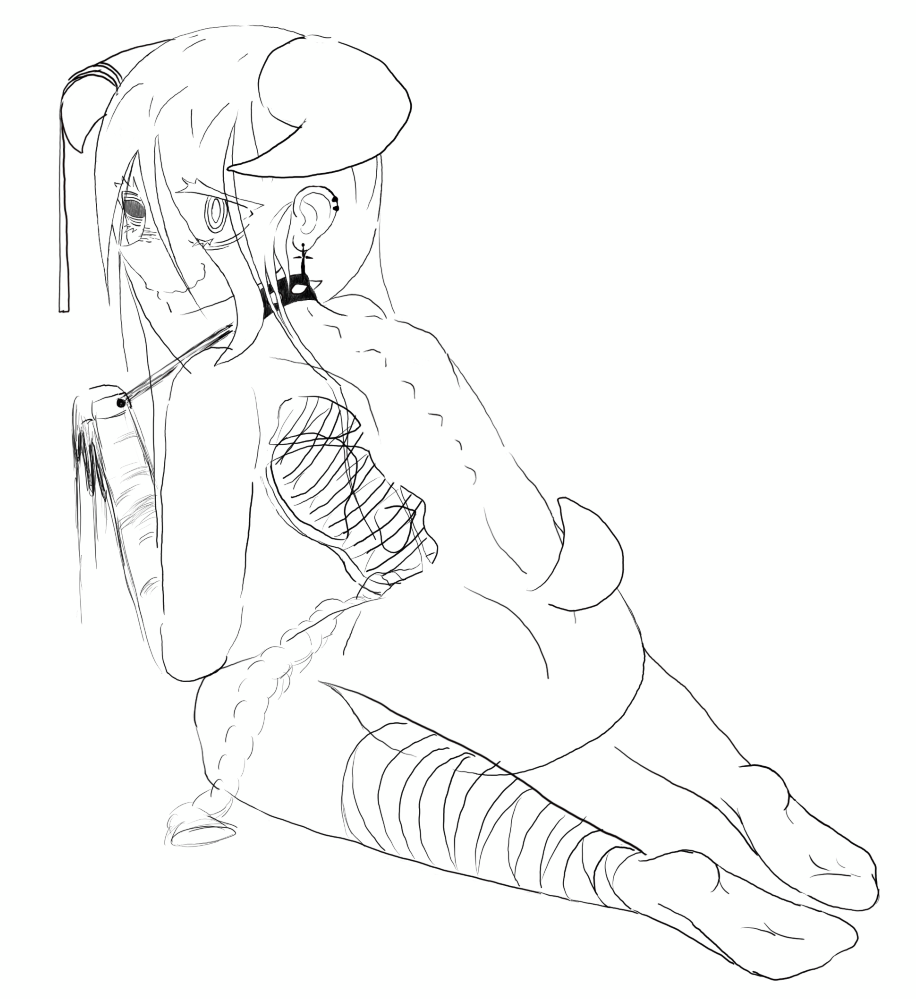

I also didn't even finish it... I don't think I will any time soon, but I'm also just happy with how it turned out so far. I tried to do a more complicated pose than I normally do, and I also managed to get the exact expression I wanted, something slightly unsettling. Once I've finished the Megurine Luka 15th birthday picture I wanted to do, maybe I'll return to this.
